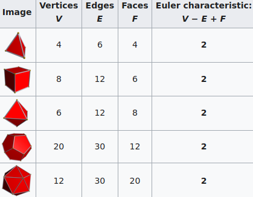
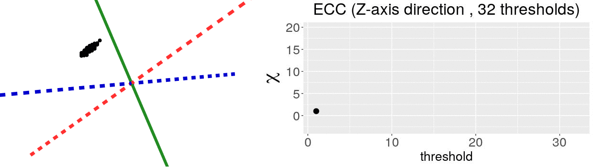
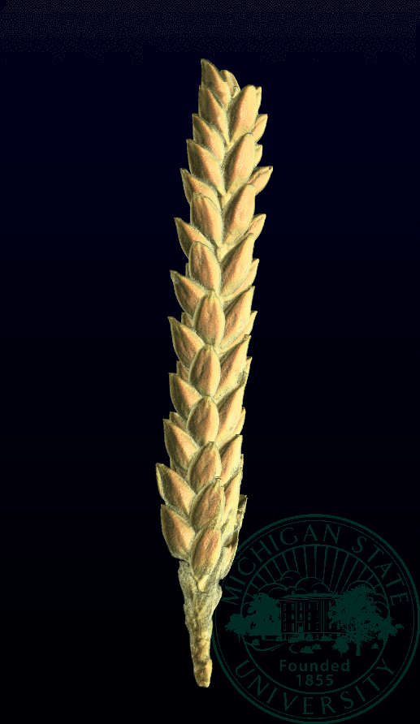
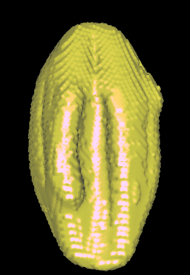
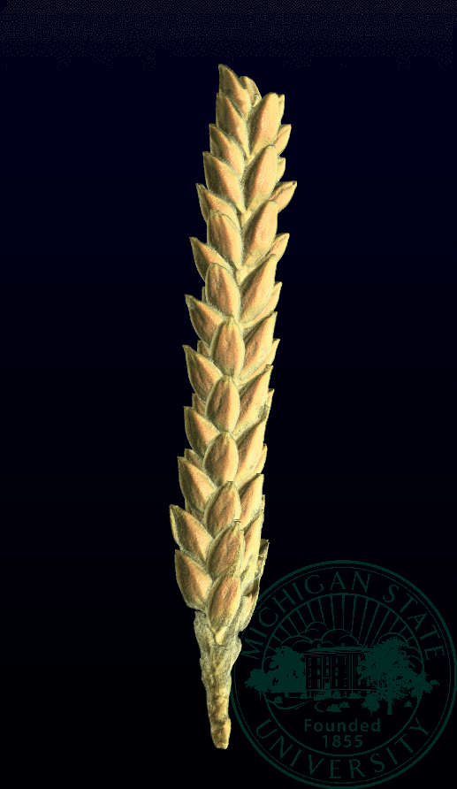
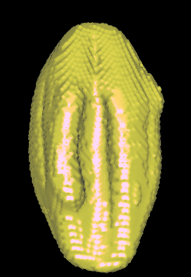
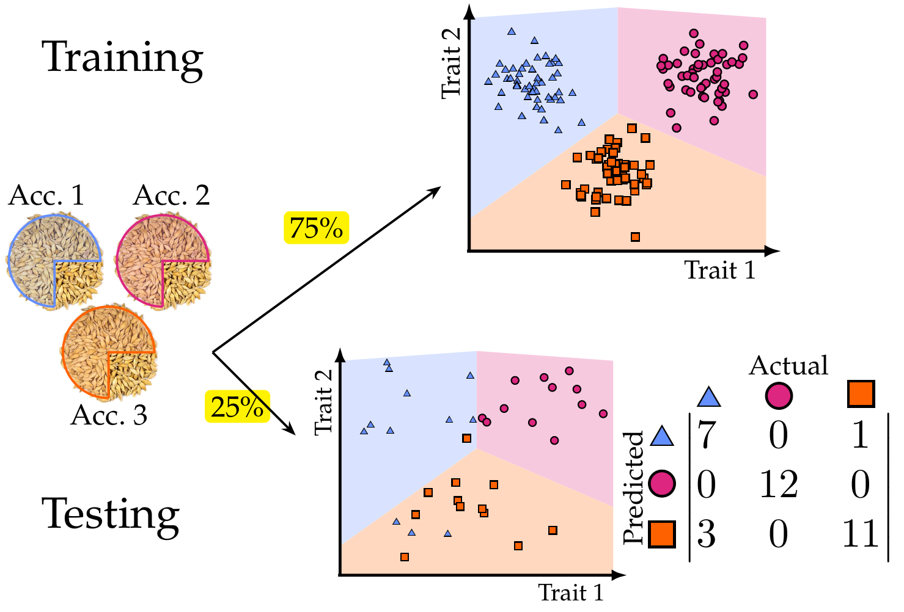
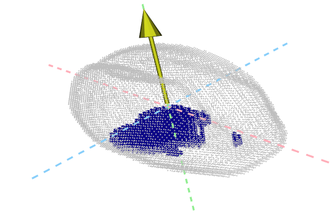

Quantifying the shape of barley grains
Barley is more than just beer. It is the fourth most cultivated grain around the world, behind maize, rice, and wheat. Barley is probably the most adaptable crop out there. There are barley land races that are originary from the warm, low-altituted, humid climate of the Moroccan Meditarrenean coast; others adapted to the dry, cold, high-altitude terrain of the Tibetan plateau. And then there are barley land races for every other climate in-between, across the whole Eurasian continent, from the Scottish Orkney Islands, to Urals in Russia; from the Norweigian Artic circle to the Rajasthan praires in India.
Even looking at the seeds, we can already see that some land races have small, rounded seeds; while others have long, elongated shapes. It is natural then to ask How does shape correspond to this climate versatility? And in turn How do we comprehensively capture shape nuances across barley grains? For shape quantification, as you might guess, we drew tools from Topological Data Analysis. Especifically, we used the Euler Characteristic Transform.
The Euler Characteristic Transform (ECT)
The Euler Characteristic (EC) of an object is a topological invariant. That is, it is a quantity that remains unchanged if we stretch, shrink, twist, or smoothly deform the object. However, it might change if we cut, paste, or pierce the object. The EC is attractive to our purposes, as it is both easy to compute and intrisically connected to the topological features of an object. From the Euler-Poincaré formula, we know that:
EC = #(connected components) - #(loops) + #(voids)
EC = #(vertices) - #(edges) + #(faces).
Following this formula, we see why all Platonic Solids share the same EC of 2. Which in turn is the same EC of a sphere.

Credits: Wikipedia
The EC on its own is too simple, though. We cannot tell apart a pyramid from a cube based solely on their ECs. We thus turn to the Euler Characteristic Transform (ECT) of objects. The ECT of barley seeds in our case. First, we fix a direction, say top to bottom. Then, we slice our seed across that direction and we compute how the EC changes as we "add slices". This gives us a topological signature, a time series on how the topology changes as we traverse the seed vertically.

How do we choose the right direction? We do not. We simply take all possible directions. For every direction, we slice and dice our seeds across such direction. That gives us different topological signatures, that we concatenate in a single, very long vector. This whole procedure is refered to as the ECT of the seed. For illustrative purposes, the animation below shows the same seed being sliced across three different directions and we record its ECT below.

The ECT is mathematically quite interesting. In 2014, Turner, Mukherjee, and Boyer mathematically proved that the ECT is injective and that it effectively summarizes all the morphological information of an object. In other words, two different shapes will produce two different ECTs; and if we are given two different ECTs, these must come from two different shapes.
An important caveat is that for the mathematical theorem to hold, we need to slice our seeds across all possible directions. We cannot perform infinite computations, though. As a proof of concept, we simply took a large number of directions and ran with it. About 150 directions seemed to be enough for our purposes. We observed that taking 200, 300, and 400 directions did not improve our results.
The barley data
In collaboration with the University of California—Riverside, we got access to barley panicle samples corresponding to 28 different land races from 28 very different climates. These panicles were later X-ray CT scanned at Michigan State University. But we want the grains. After plenty of trial and error with image processing, a script was developed to automatically extract digitally individual grains from all the panicles.

 



Once we have individual 3D grains, we measure barley grain
shape with two different sets of shape descriptors:
- Traditional: length, width, volume, surface area, etc. for each grain. We used 11 traditional descriptors in total.
- Topological: the ECT computed across 158 directions across 16 slices per direction This produced a very large vector of more than 2500 dimensions per seed (!). To avoid shenanigans from the curse of dimensionality, this large vector was later aggresively reduced to just 12 dimensions using UMAP.
Barley Classification Results
How descriptive is our shape quantification? As a sanity check, we first test whether shape information alone is enough to tell apart seeds from different accessions. Now that we describe numerically the shape of every seed, we can employ many machine learning classification algorithms. We chose a support vector machine (SVM) due to its simplicity and the fact that we do not require large amounts of training data (unlike neural networks). Following a supervised learning pipeline, we chose 75% of the seeds from each accession as training data. With this training, the machine tries to deduce a pattern that characterizes the numerical descriptors corresponding to each accession. Next, we verify how good of job the machine did for pattern recognition. We test such pattern recognition asking the machine to predict the accession of the 25% of grains remaining based solely on numerical shape description. Finally, we compute the machine accuracy. Below is an illustration of supervised learning with 3 accessions. In our experiment, we worked with 28 accessions.

We trained 3 different SVMs. One used only traditional shape descriptors. The other used solely topological shape descriptors. And the last one used both sets of descriptors. The classification accuracy results were quite encouraging.
| Shape descriptors | No. of descriptors | F1 |
|---|---|---|
| Traditional | 11 | 0.55 ± 0.019 |
| Topological | 12 | 0.74 ± 0.016 |
| Combined | 23 | 0.86 ± 0.010 |
Just using traditional descriptors, the machine does a decent
job already. It correctly predicts the accession 55% of the time.
For comparison, if the machine were to guess randomly out of
28 possible accessions, it would give the correct answer less
than 4% of the time.
If we use topological shape descriptors, the machine accuracy
improves, which suggests that the ECT is capturing
shape nuances that are not readily seen by the naked eye.
Finally, combining both sources of morphological information
yields the best results.
A closer examination of the results shows that traditional shape descriptors highlight shape similarities across barley accessions. Topological shape descriptors highlight similarites across individual panicles. Thus, their combination yields exciting results at both population and individual levels (!) Compare Figures 5 and 6 from our paper.
But what does topology really measure?
One key advantage of the ECT over other TDA methods is that it is relatively easy to observe how physical, shape features are topologically encoded. In the ECT case, we can use a Kruskal-Wallis One Way Analysis of Variance to determine which directions and slices were topologically different across seeds corresponding to different barley varieties. Turns out that the most significant shape differences across accessions correspond to the top and bottom sides of the seeds!

Future directions
Now that we are convinced that our shape descriptors do a good job of telling apart different barley accessions, the potential future directions are exciting. To name a few:
- Identify specific molecular markers corresponding to morphological differences across the diverse barley population.
- Develop a high-throughput pipeline to produce 3D images of individual barley seeds and quantify comprehensively their morphology.
- Formalize a method for promising seedling selection to further crop breeeding.
- Extend such pipeline and population genetics studies to other crops and grains.
Stay tuned for updates!
¡Published article: Amézquita et al. (2021)!
DOI: 10.1093/insilicoplants/diab033
—
A general-audience brief piece was written about our paper in Botany One.
Lee un resumen de nuestro paper para público general en Botany One.
—
The Euler Characteristic Transform is our main workhorse to measure and compare grain shape. Watch my following video below for more details.
This is a 4min spiel on the barley project I recorded a while ago.
—
As slides: Presented at JMM 2022. April 2022.
As a static poster: Presented at IPPS 2022. September 2022.
As a dynamic poster: Updated from AATRN. October 2021.
——————————
Other research projects
- Quantification of barley grain morphology
- Sub-cellular transcriptomic patterns
- The early dodder gets the host
- The crackability of walnuts: all about shape, in a nutshell
- Global disparities in plant biology research
- Mapper to unravel the shape of omics data
- The intersection of Topological Data Analysis and Biology
- The shape of citrus fruits and modeling their oil gland distribution
- Archaeological artifact classification and the Euler Characteristic